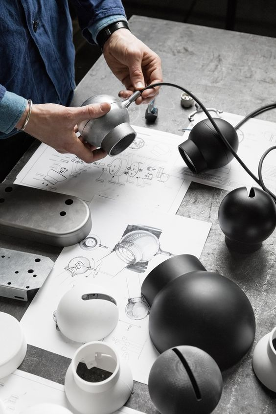
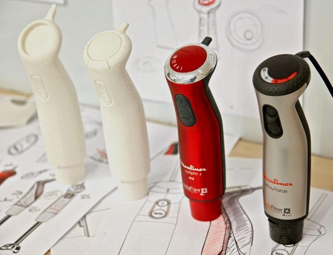
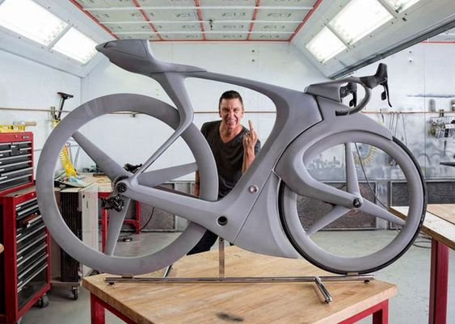
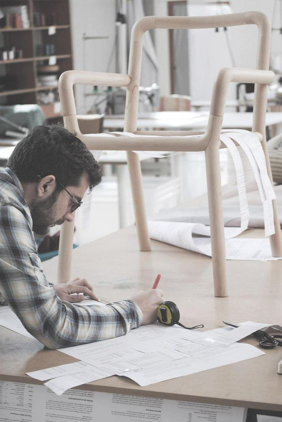
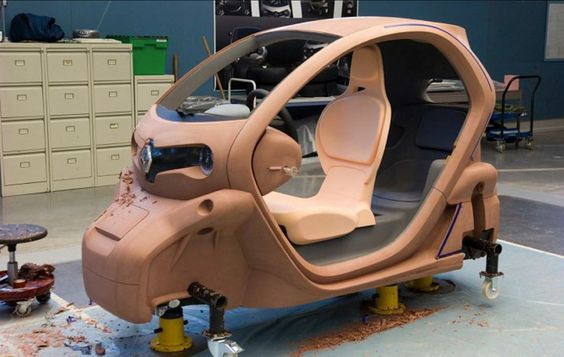
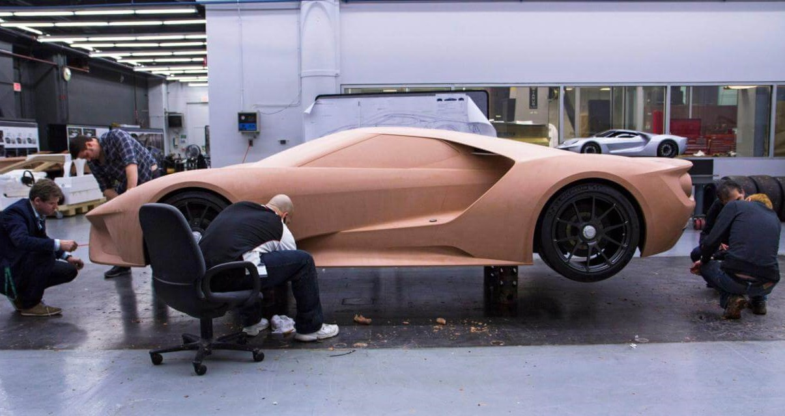
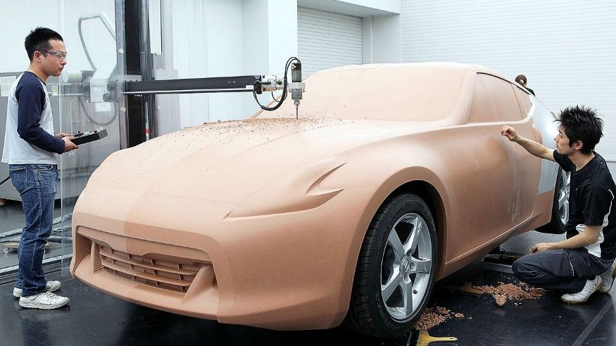
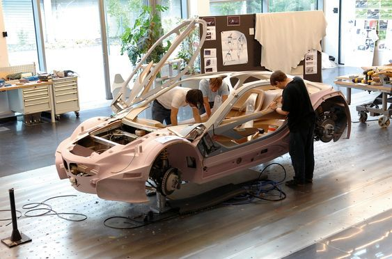
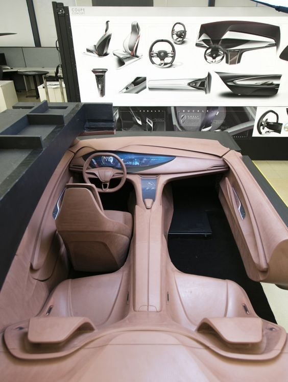

+++
title = "Tasarım Sözlüğü: Prototip"
seotitle="Tasarımda Prototip Nedir? Prototip Süreci"
description=""
url="sayi-11/prototip-nedir"
aciklama="Prototip sözcüğüne Türkçede karşılık gelen anlam, ilk örnek, modeldir. İngilizce prototype olan bu kelimenin İngilizce sözlükte açıklaması, 'Ürün, ticari olarak üretilmeden önce gerektiğinde tasarımının değiştirilebilmesi için test edilen bir üründen üretilen ilk birimlerden biri.' Tasarım sürecinde prototip oluşturmak; ürünün özelliklerini keşfetmek, tasarım konseptini görmek, iyi anlamak ve aktarmak, üründen geri bildirim almak ve ürünü geliştirmek için oluşturulan gerçekçi bir taslaktır."
type="sayfa"
thumb="/img/tasarimda-prototip-thumbnail.jpg"
date = "2021-07-10"
sayi=["11"]
sayfa="03"
yazar=["goksu gokturk"]
tags= ["ana sayfa", "dergi", "tasarim sozlugu"]
+++

<div class="container">
   <div class="row">
      <div class="col-md-6">
         <h2 class="mt-md-3" id="prototip-nedir">Prototip Nedir?</h2>
         <p>
            Prototip sözcüğüne Türkçede karşılık gelen anlam,
            <strong>ilk örnek, model</strong>dir. İngilizce
            <em>prototype</em> olan bu kelimenin İngilizce sözlükte açıklaması,
            <strong
               >&quot;Ürün, ticari olarak üretilmeden önce gerektiğinde
               tasarımının değiştirilebilmesi için test edilen bir üründen
               üretilen ilk birimlerden biri.&quot;</strong
            >
         </p>
      </div>
      <div class="col-md-6">
         <p>
            Tasarım sürecinde prototip oluşturmak; ürünün özelliklerini
            keşfetmek, tasarım konseptini görmek, iyi anlamak ve aktarmak,
            üründen geri bildirim almak ve ürünü geliştirmek için oluşturulan
            gerçekçi bir taslaktır.
         </p>
         <p>
            Prototip, gelecekteki modeller için temel teşkil eden bir
            örnektir. Prototipleme, tasarımcılara üretimden önce bir ürünün
            işlevselliğini doğrulamak için mevcut tasarımı test etme fırsatı
            verir. Prototipler 1:1 ölçekli hazırlanır. Üretimden önceki ürünün
            son safhası olduğu için bire bir şekilde test edilir.
         </p>
      </div>
   </div>

   <div class="row">
      <div class="col-md-4">
         {{}}
      </div>
      <div class="col-md-4">
         {{}}
         <br ><br >
         {{}}
      </div>
      <div class="col-md-4">
         {{}}
      </div>
   </div>
   <p>
      Tasarımda hayali bir fikri, kullanıcıya açıklamanın birçok yolu vardır.
      Yazılı veya görsel olan bu yollardan bir tanesi ise prototiptir. Prototip
      son ürünün gerçekçi bir simülasyonu olduğu için kullanıcı; görerek,
      dokunarak, kullanarak ürünü deneyimler. Ürünün nasıl görüneceği,
      hissedileceği ve çalışacağı konusunda iyi bir gelecek vizyonu verir.
      Fikirlerin anlaşılabilmesi ve değer kazanması bakımından prototip
      oluşturmak daima tatmin edici bir yöntemdir.
   </p>
   <h2 id="prototipin-gelişimi">Prototipin Gelişimi</h2>
   <p>
      
   </p>
   <h2 id="hızlı-prototipleme">Hızlı Prototipleme</h2>
   <div class="row">
      <div class="col-md-6">
         <div class="p-md-3 bg-grey">
            <p>
               Hızlı Prototip Oluşturma (HPO), CAD verisinden ince tabakalar
               şeklinde gerçek parça / nesne üretmede kullanılan bazı
               teknolojileri içermektedir. Bu teknolojilerle hızlı 3B
               prototipler oluşturulabilir ve böylece de gerçek model üzerinde
               çalışma (test, boyut kontrolü vb.) mümkün olur. Ayrıca kalıp ve
               gerçek parçalar da yapılabilir. Özellikle küçük parti
               üretimlerinde çok faydalı olabilir. Burada “hızlı” ifadesi CAD
               verisinden makineye hızlı geçişi belirtir (çabuk üretimi değil).
               [1]
            </p>
         </div>
      </div>
      <div class="col-md-6">
         <p>
            Geleneksel teknikleri kullanarak prototip üretmek ve test etmek,
            genellikle pahalı ve zaman alıcıdır. Prototipi yapılmış ve test
            edilmiş bir başlangıç tasarımı sorunlar verirse tekrarlanır ve
            analiz edilir. Fakat bunun sık olmasına izin verilmez. Hızlı
            prototiplemede; tasarımcı makinaya üç boyutlu CAD yazılımının
            stereolithography biçimi denen endüstri standart dosyasını gönderir.
            Bu program ile iletişim kurabilen 3D baskı aleti, dosyayı okur,
            modeli paralel enine kesitlere böler. Enine kesitler, yapılacak
            tabakaların boyut ve kalınlıkları ile uyumlu olmalıdır. Dijital
            dosyalarda, tasarımcıya ince ayarlamalar yapabilme imkanı tanınır ve
            bu üretim aşaması ile takip edilir. [2]
         </p>
      </div>
   </div>

   <div class="row">
      <div class="col-md-6">
         <h3 class="mt-1">HPO’nun genel avantajları şöyle belirtilebilir:</h3>
         <ul>
            <li>
               Hemen her tasarıma uygulanabilir ve tam otomatik yapılabilir.
            </li>
            <li>
               Kullanımı oldukça kolaydır ve çok az ön / son işlem gerekir.
            </li>
            <li>
               Prototip maliyeti az olur ve farklı tasarım seçenekleri kolay
               elde edilebilir.
            </li>
            <li>Gerçek model hataları kolay kontrol edilebilir.</li>
         </ul>
      </div>
      <div class="col-md-6">
         <div class="embed-responsive embed-responsive-16by9">
            <iframe
               class="embed-responsive-item"
               src="https://www.youtube.com/embed/_1bOaNSy5XY"
            ></iframe>
         </div>
      </div>
   </div>
   <div class="row">
      <div class="col-md-4">
         {{}}
         <br ><br >
         {{}}
      </div>
      <div class="col-md-4">
         {{}} 
         <br ><br >
         {{}}
      </div>
      <div class="col-md-4">
        {{}}
    </div>
   </div>
   <div class="row">
      <div class="col-md-6">
         <div class="embed-responsive embed-responsive-16by9">
            <iframe
               class="embed-responsive-item"
               src="https://www.youtube.com/embed/2PzT0aAi9Lw"
            ></iframe>
         </div>
      </div>
      <div class="col-md-6">
         <div class="embed-responsive embed-responsive-16by9">
            <iframe
               class="embed-responsive-item"
               src="https://www.youtube.com/embed/7Vp6A0FHNL0"
            ></iframe>
         </div>
      </div>
   </div>
   <button
   class="btn markutbtn"
   data-target="#my-collapse"
   data-toggle="collapse"
   aria-expanded="false"
   aria-controls="my-collapse"
   >
   Kaynaklar
   </button>
   <div id="my-collapse" class="collapse">
   <pre> <small><code>  
    Hızlı Prototip Oluşturmada Karşılaşılan Problemler Ve Çözüm Önerileri*, H. Rıza BÖRKLÜ, A. Kıvanç YILDIRIM, H. Kürşad SEZER https://dergipark.org.tr/en/download/article-file/716073 (1)

    3D Baskı ile Hızlı Prototip ve Son Ürün Üretimi Fevzi Yılmaz, M. Esad Arar ve Ebubekir Koç http://acikerisim.fsm.edu.tr/xmlui/bitstream/handle/11352/1830/Y lmaz&Arar&Koç.pdf?sequence=1 (2)
    
    http://dspace.yildiz.edu.tr/xmlui/bitstream/handle/1/9684/0009116.pdf?sequence=1&isAllowed=y
    
    ENDÜSTRİYEL BOYUTLU ÇİFT BAŞLI KARTEZYEN TİPİ ÜÇ BOYUTLU YAZICI TASARIMI VE PROTOTİP ÜRETİMİ, Burak GÜLER, Kerim ÇETİNKAYA https://dergipark.org.tr/en/download/article-file/435960
    
    Design Dictionary, Michael Erlhoff, Tim Marshall, Perspectives on Design Terminology, Birkhäuser, Basel · Boston · Berlin
    
    Arayüz Tasarımları İçin Prototip Kullanımı, Arş. Gör. Samed Sakman https://dergipark.org.tr/en/download/article-file/390910
    
    What is prototyping? https://www.youtube.com/watch?v=_1bOaNSy5XY
    
    Innovation 101 E4: Prototyping & Testing - Physical Products https://www.youtube.com/watch?v=2PzT0aAi9Lw
    
    How to Prototype: Furniture Edition + Final Design Reveal https://www.youtube.com/watch?v=E5MhcjcbLa4
    
    Porsche 911 (992) - Development Of Stunning Sports Car https://www.youtube.com/watch?v=7Vp6A0FHNL0
    
    https://www.autodesk.com/products/fusion-360/blog/3-types-of-industrial-design-prototyping/
    
    https://en.wikipedia.org/wiki/Prototype
    
    https://medium.com/@matterglobal/prototyping-the-lost-art-of-industrial-design-d902d8c57a49
    
    https://www.makodesign.com/blog/2019/06/13/prototypes-importance-in-product-design/
    
    https://waykenrm.com/industries/industrial-design-prototyping/
    
    https://inertiaengineering.com/three-phases-prototyping/
    
    https://www.ideareality.design/services/design/
    
    https://www.techopedia.com/definition/678/prototype
    
    https://www.collinsdictionary.com/dictionary/english/prototype
    
    https://3d-printing-expert.com/user-experience-prototype/
    
    https://3d-printing-expert.com/what-is-a-visual-prototype/
     </code></small></pre>
   </div>
</div>
